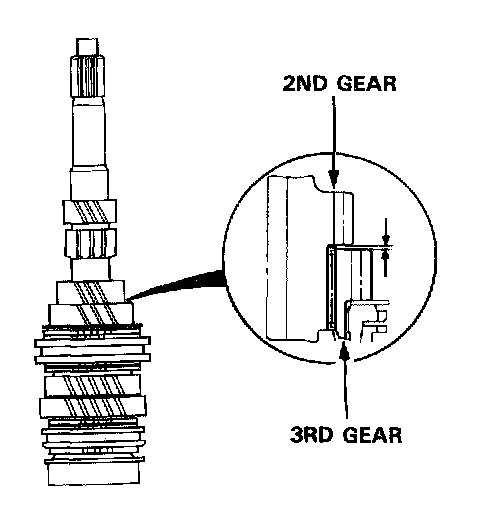
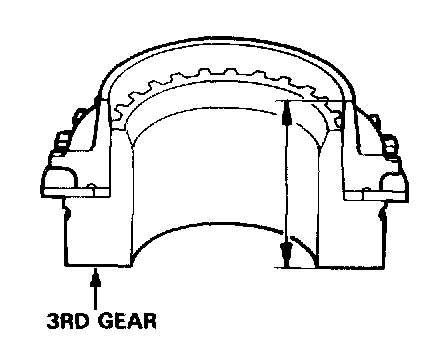
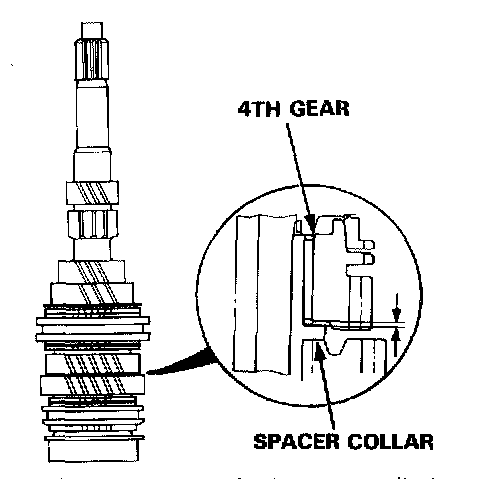
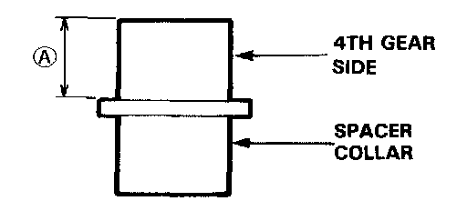
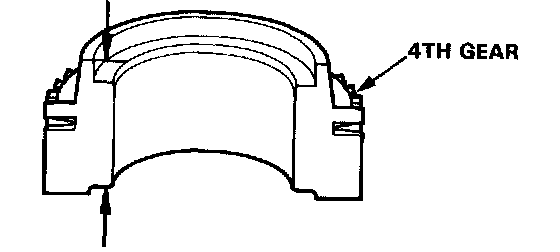
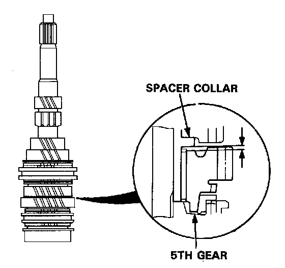
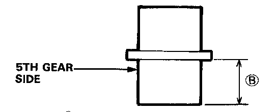
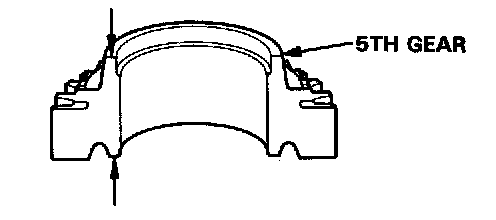

Mainshaft: Testing and Inspection
Clearance InspectionNOTE: If replacement is required, always the synchro sleeve and synchro hubs as a set.

1. Measure the clearance between 2nd and 3rd gears.
Standard: 0.06-0.21 mm (0.002-0.008 in)
Service Limit: 0.3 mm (0.012 in)

2. If the clearance exceeds the service limit, measure the thickness of 3rd gear.
Standard: 34.42-34.47 mm (1.355-1.357 in)
Service Limit: 33.8 mm (1.331 in)
If the thickness of 3rd gear is less than the service limit, replace of 3rd gear with a new one. If the thickness of 3rd gear is within the service limit, replace the 3rd/4th synchro hub with a new one.

3. Measure the clearance between 4th gear and the spacer collar.
Standard: 0.06-0.21 mm (0.002-0.008 in)
Service Limit: 0.3 mm (0.012 in)

4. If the clearance exceeds the service limit, measure distance (A) on the spacer collar.
Standard: 26.03-26.08 mm (1.025-1.027 in)

5. If distance (A) is less than the standard, replace the spacer collar with a new one.
If distance (A) is within the standard, measure the thickness of 4th gear.
Standard: 30.92-30.97 mm (1.217-1.219 in)
Service Limit: 30.8 mm (1.213 in)
- If the thickness of 4th gear is less than the service limit, replace 4th gear with a new one.
- If the thickness of 4th gear is within the service limit, replace the 3rd/4th synchro hub with a new one.

6. Measure the clearance between 5th gear and the spacer collar.
Standard: 0.06-0.21 mm (0.002-0.008 in)
Service Limit: 0.3 mm (0.012 in)

7. If the clearance exceeds the service limit, measure distance (B) on the spacer collar.
Standard: 26.03-26.08 mm (1.025-1.027 in)

8. If distance (B) is less than the standard, replace the spacer collar with a new one.
If distance (B) is within the standard, measure the thickness of 5th gear.
Standard: 31.42-31.47 mm (1.237-1.239 in)
Service Limit: 31.3 mm (1.232 in)
- If the thickness of 5th gear is less than the service limit, replace 5th gear with a new one.
- If the thickness of 5th gear is within the service limit, replace the 5th/reverse synchro hub with a new one.